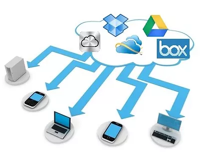

DISCOS VIRTUALES
¿Qué es?
Un disco duro virtual es un espacio en un servidor que vamos a
utilizar para guardar archivos. Para hacernos una idea más
gráfica, imaginemos que tenemos varios ordenadores conectados en
red y en uno de ellos creamos una partición para guardar algunos
de nuestros archivos. Pues bien, esta partición en lugar de estar
en otro de nuestros ordenadores está en un ordenador accesible
mediante Internet , normalmente de un tercero o de uso no
exclusivo nuestro, estamos ante lo que normalmente se llama un
disco duro virtual.
Ventajas
- Compatibilidad con programas de aceleración de descargas.
- Subida múltiple de archivos.
- Sistema de progreso de subida.
- Usuarios anónimos pueden subir archivos.
-
Diferentes niveles para cuando se tengan que compartir archivos.
- Continuación de transferencia interrumpida.
- Poder cambiar la descripción del archivo.
-
Pre visualización del archivo con creación automática de iconos.
- Álbum fotográfico.
- Poder obtener archivos de otras páginas web.
- Enlace de descarga directa.
- Pre visualización de contenidos de un archivo zip.
- Descarga múltiple de archivos.
- Reproducción de archivos de música.
- Edición de archivos de texto.
- Función de búsqueda.

Desventajas
Debemos tener acceso a internet para su uso.
Debemos tener cuidado en el manejo de nuestras contraseñas.
Dependiendo la cantidad de archivos en algunos casos el servicio
es costoso.
Suelen existir limitaciones de acuerdo al proveedor y las
plataformas o aplicaciones que el ofrece.
En muchos casos es lento el acceso de datos.
Crear discos duros virtuales
Antes de crear un disco duro virtual, asegúrese de que es
consciente del almacenamiento físico necesario para el archivo
.vhd. Los requisitos de almacenamiento son distintos según el tipo
de disco duro virtual. Los tipos de disco y los requisitos de
almacenamiento son los siguientes:
Disco duro virtual de expansión dinámica: Este tipo
requiere como mínimo 8 MB de espacio disponible en el medio de
almacenamiento físico. El tamaño del disco (y del archivo .vhd)
aumenta a medida que se usa el disco hasta alcanzar el tamaño
máximo especificado cuando se creó el disco.
Disco duro virtual fijo: Este tipo de riesgo requiere
espacio de almacenamiento físico equivalente al tamaño
especificado para el disco en el momento de crearlo. El tamaño
del archivo .vhd es igual al tamaño del disco duro virtual y no
se modifica.
Disco duro virtual de diferenciación: Este tipo requiere
poco espacio de almacenamiento físico cuando se crea el disco y
más espacio a medida que el tamaño del disco aumenta. El tamaño
máximo de un disco de diferenciación está limitado por el tamaño
máximo de su disco duro primario./
Pasos para crear un disco duro virtual:
Abra la carpeta Máquinas virtuales. (En el menú Inicio, haga
clic en Windows Virtual PC.)
Haga clic con el botón secundario del mouse en la máquina
virtual que desee asociar al nuevo disco duro virtual y, a
continuación, haga clic en Configuración.
En el panel izquierdo, haga clic en una de las configuraciones
de Unidad de disco duro.
En el panel derecho, haga clic en Crear. Se abre el Asistente
para crear un disco duro virtual.
Navegue por las páginas del asistente. Una vez creado el disco
duro virtual, se asociará a la máquina virtual y estará
disponible para el sistema operativo invitado. Si instala un
sistema operativo en este disco duro virtual, el proceso de
instalación preparará automáticamente el disco para el uso y no
será necesario completar el resto de pasos. En caso contrario,
complete los pasos siguientes para preparar el disco para usarlo
en el sistema operativo invitado.
Inicie la máquina virtual e inicie sesión en el sistema
operativo invitado.
Abra el Administrador de discos.
El nuevo disco duro virtual aparece como disco independiente.
Asigne una letra a la unidad y cree un volumen equivalente al
que necesitaría para un disco físico. Ahora el disco duro
virtual está listo para usarse.